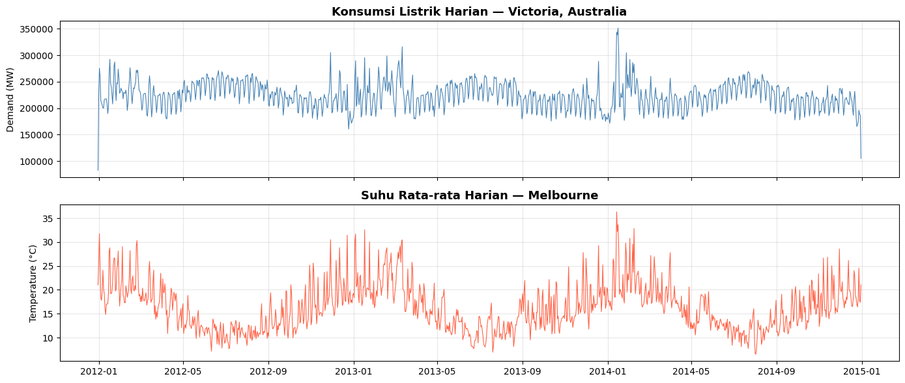
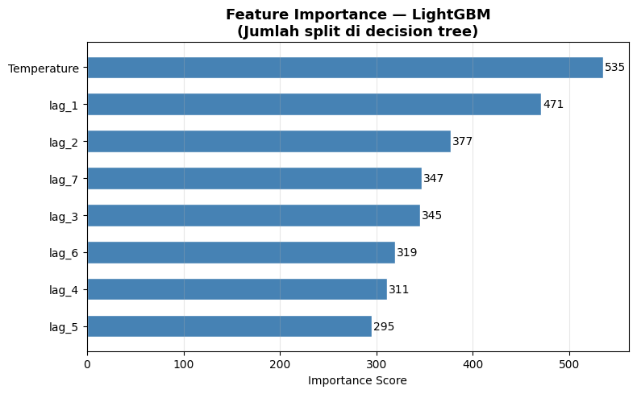
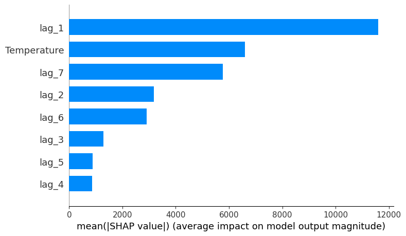
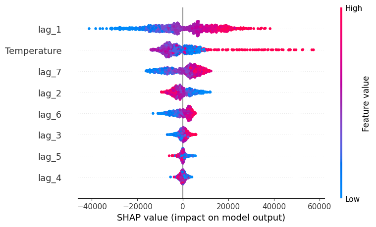
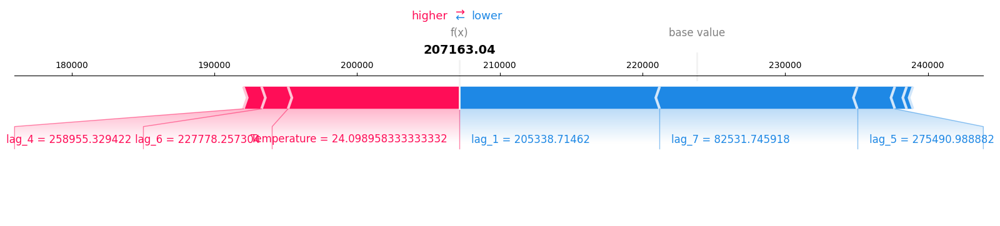
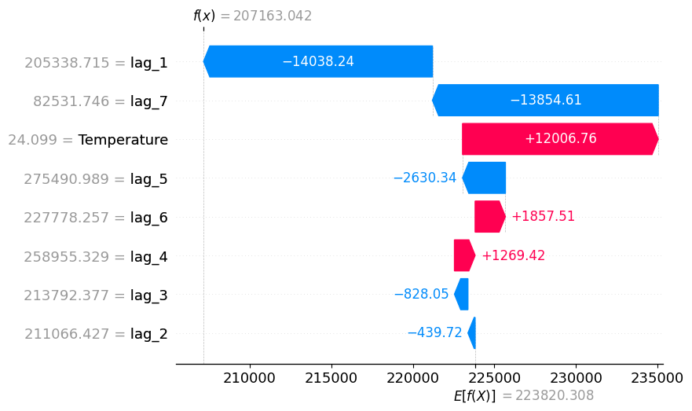
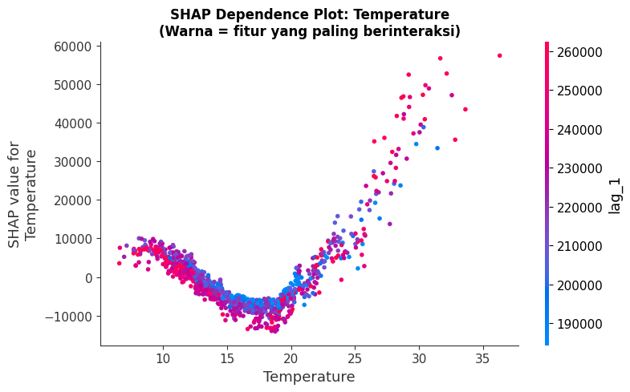
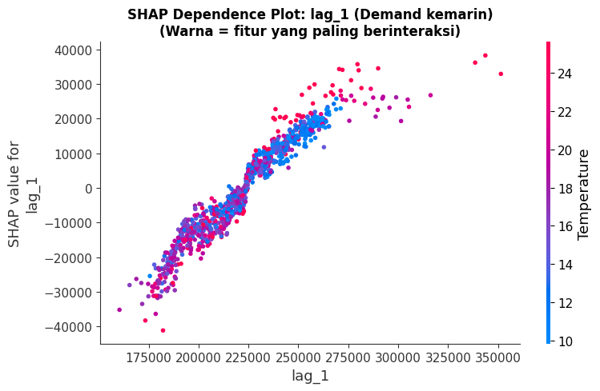
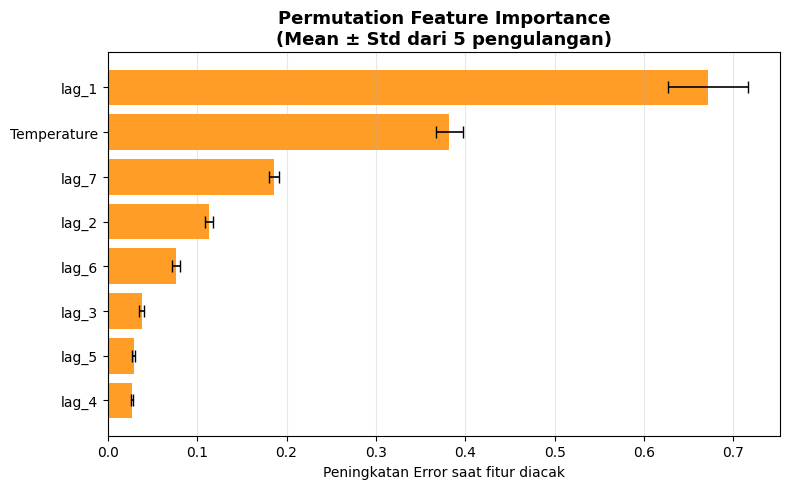
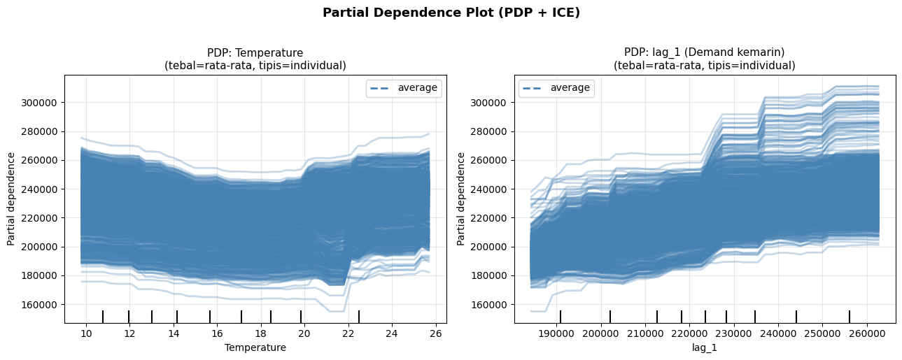

Explainability pada Time Series Forecasting#
Reproduksi dari: skforecast.org — Explainability#
📌 1. Analisa Prediksi Tentang Apa?#
Tutorial ini melakukan prediksi permintaan listrik harian (Electricity Demand) di negara bagian Victoria, Australia.
Target (output): Total konsumsi listrik per hari dalam satuan MW (Megawatt)
Tujuan utama: Bukan hanya meramalkan, tetapi menjelaskan mengapa model membuat prediksi tersebut (explainability)
Dataset:
vic_electricity— data setengah-jam dari 2012–2015, diagregasi menjadi harian
Teknik Explainability yang digunakan:#
# |
Metode |
Scope |
|---|---|---|
1 |
Feature Importance (LightGBM) |
Global |
2 |
SHAP Summary Plot |
Global |
3 |
SHAP Force Plot + Waterfall |
Lokal (per prediksi) |
4 |
SHAP Dependence Plot |
Global |
5 |
Permutation Importance |
Global |
6 |
Partial Dependence Plot (PDP) |
Global |
⚙️ Instalasi Library#
Jalankan cell berikut sekali saja, lalu restart kernel sebelum lanjut ke cell berikutnya.
import subprocess, sys
subprocess.check_call([
sys.executable, "-m", "pip", "install",
"skforecast", "lightgbm", "shap", "matplotlib", "pandas", "scikit-learn", "-q"
])
print("✅ Instalasi selesai! Silakan Restart Kernel (menu Kernel > Restart Kernel).")
✅ Instalasi selesai! Silakan Restart Kernel (menu Kernel > Restart Kernel).
📦 Import Library#
Library |
Fungsi |
|---|---|
|
Manipulasi dan analisis data tabular |
|
Visualisasi grafik |
|
Model gradient boosting berbasis tree |
|
Framework forecasting time series |
|
Menghitung dan memvisualisasikan SHAP values |
|
Permutation importance & Partial Dependence Plot |
import warnings
warnings.filterwarnings('ignore')
import pandas as pd
import numpy as np
import matplotlib.pyplot as plt
import shap
from sklearn.inspection import permutation_importance
from sklearn.inspection import PartialDependenceDisplay
from lightgbm import LGBMRegressor
from skforecast.datasets import fetch_dataset
from skforecast.recursive import ForecasterRecursive
import logging
logging.getLogger('lightgbm').setLevel(logging.ERROR)
print("✅ Semua library berhasil diimport!")
import skforecast
print(f" skforecast : {skforecast.__version__}")
print(f" shap : {shap.__version__}")
import lightgbm
print(f" lightgbm : {lightgbm.__version__}")
✅ Semua library berhasil diimport!
skforecast : 0.22.0
shap : 0.52.0
lightgbm : 4.6.0
📊 2. Bentuk Data Training#
Sumber Data#
Dataset vic_electricity dari paket tsibbledata (R), berisi konsumsi listrik Victoria, Australia dengan frekuensi setengah-jam.
Kolom setelah agregasi harian:#
Kolom |
Peran |
Keterangan |
|---|---|---|
|
Target (y) |
Total konsumsi listrik per hari (sum) |
|
Fitur eksogen |
Suhu rata-rata per hari (mean) |
# Download dan load dataset
data = fetch_dataset(name="vic_electricity")
print(f"Shape data asli : {data.shape}")
print("\n5 baris pertama:")
print(data.head().to_string())
╭──────────────────────────── vic_electricity ─────────────────────────────╮ │ Description: │ │ Half-hourly electricity demand for Victoria, Australia │ │ │ │ Source: │ │ O'Hara-Wild M, Hyndman R, Wang E, Godahewa R (2022).tsibbledata: Diverse │ │ Datasets for 'tsibble'. https://tsibbledata.tidyverts.org/, │ │ https://github.com/tidyverts/tsibbledata/. │ │ https://tsibbledata.tidyverts.org/reference/vic_elec.html │ │ │ │ URL: │ │ https://raw.githubusercontent.com/skforecast/skforecast- │ │ datasets/main/data/vic_electricity.csv │ │ │ │ Shape: 52608 rows x 4 columns │ ╰──────────────────────────────────────────────────────────────────────────╯
Shape data asli : (52608, 4)
5 baris pertama:
Demand Temperature Date Holiday
Time
2011-12-31 13:00:00 4382.825174 21.40 2012-01-01 True
2011-12-31 13:30:00 4263.365526 21.05 2012-01-01 True
2011-12-31 14:00:00 4048.966046 20.70 2012-01-01 True
2011-12-31 14:30:00 3877.563330 20.55 2012-01-01 True
2011-12-31 15:00:00 4036.229746 20.40 2012-01-01 True
# Agregasi dari setengah-jam menjadi harian
# Demand : dijumlahkan (total per hari)
# Temperature : dirata-ratakan (rata-rata per hari)
data = data.resample('D').agg({'Demand': 'sum', 'Temperature': 'mean'})
print(f"Shape setelah agregasi : {data.shape}")
print(f"Periode data : {data.index.min().date()} s.d. {data.index.max().date()}")
print("\n5 baris pertama:")
print(data.head().to_string())
Shape setelah agregasi : (1097, 2)
Periode data : 2011-12-31 s.d. 2014-12-31
5 baris pertama:
Demand Temperature
Time
2011-12-31 82531.745918 21.047727
2012-01-01 227778.257304 26.578125
2012-01-02 275490.988882 31.751042
2012-01-03 258955.329422 24.567708
2012-01-04 213792.376946 18.191667
Visualisasi Data Time Series#
Plot di bawah menampilkan dua variabel utama:
Demand — konsumsi listrik harian (target prediksi)
Temperature — suhu rata-rata harian (fitur eksogen)
Terlihat pola musiman yang jelas: konsumsi naik saat suhu sangat tinggi (musim panas) maupun sangat rendah (musim dingin).
# Visualisasi time series
fig, axes = plt.subplots(2, 1, figsize=(14, 6), sharex=True)
axes[0].plot(data.index, data['Demand'], color='steelblue', linewidth=0.8)
axes[0].set_title('Konsumsi Listrik Harian — Victoria, Australia', fontsize=13, fontweight='bold')
axes[0].set_ylabel('Demand (MW)')
axes[0].grid(True, alpha=0.3)
axes[1].plot(data.index, data['Temperature'], color='tomato', linewidth=0.8)
axes[1].set_title('Suhu Rata-rata Harian — Melbourne', fontsize=13, fontweight='bold')
axes[1].set_ylabel('Temperature (°C)')
axes[1].grid(True, alpha=0.3)
plt.tight_layout()
plt.show()

❓ 3. Apa Itu Lag?#
Lag adalah nilai dari waktu sebelumnya yang dijadikan fitur input untuk memprediksi nilai saat ini.
Model ML seperti LightGBM tidak mengerti urutan waktu secara otomatis.
Dengan lag, time series diubah menjadi tabel regresi biasa yang bisa diproses model.
Ilustrasi lags = 7:#
Hari ini (target) ← diprediksi dari:
lag_1 = demand kemarin (t-1)
lag_2 = demand 2 hari lalu (t-2)
lag_3 = demand 3 hari lalu (t-3)
... ...
lag_7 = demand 7 hari lalu (t-7)
+ Temperature hari ini (eksogen)
Bentuk matriks training setelah dibuat lag:#
lag_1 |
lag_2 |
… |
lag_7 |
Temperature |
y (target) |
|---|---|---|---|---|---|
205338 |
211066 |
… |
82531 |
24.09 |
200693 |
200693 |
205338 |
… |
227778 |
20.22 |
200061 |
🤖 Membuat dan Melatih Forecaster#
ForecasterRecursive secara otomatis:
Membuat fitur lag dari time series
Melatih model LightGBM menggunakan fitur-fitur tersebut
Saat prediksi, output sebelumnya dipakai sebagai input (strategi rekursif)
# Buat dan latih forecaster
forecaster = ForecasterRecursive(
estimator = LGBMRegressor(random_state=123, verbose=-1),
lags = 7
)
forecaster.fit(
y = data['Demand'],
exog = data['Temperature']
)
print("✅ Forecaster berhasil dilatih!")
print(forecaster)
✅ Forecaster berhasil dilatih!
===================
ForecasterRecursive
===================
Estimator: LGBMRegressor
Lags: [1 2 3 4 5 6 7]
Window features: None
Window size: 7
Series name: Demand
Exogenous included: True
Exogenous names: Temperature
Categorical features: auto
Transformer for y: None
Transformer for exog: None
Weight function included: False
Differentiation order: None
Drop NaN from series: False
Training range: [Timestamp('2011-12-31 00:00:00'), Timestamp('2014-12-31 00:00:00')]
Training index type: DatetimeIndex
Training index frequency: <Day>
Estimator parameters:
{'boosting_type': 'gbdt', 'class_weight': None, 'colsample_bytree': 1.0,
'importance_type': 'split', 'learning_rate': 0.1, 'max_depth': -1,
'min_child_samples': 20, 'min_child_weight': 0.001, 'min_split_gain': 0.0,
'n_estimators': 100, 'n_jobs': None, 'num_leaves': 31, 'objective': None,
'random_state': 123, 'reg_alpha': 0.0, 'reg_lambda': 0.0, 'subsample': 1.0,
'subsample_for_bin': 200000, 'subsample_freq': 0, 'verbose': -1}
fit_kwargs: {}
Creation date: 2026-06-10 08:37:49
Last fit date: 2026-06-10 08:37:50
Skforecast version: 0.22.0
Python version: 3.14.3
Forecaster id: None
# Buat matriks training (X_train, y_train)
X_train, y_train = forecaster.create_train_X_y(
y = data['Demand'],
exog = data['Temperature']
)
print("=" * 55)
print("MATRIKS X_train (INPUT FITUR):")
print("=" * 55)
print(f"Shape : {X_train.shape} ({X_train.shape[0]} baris x {X_train.shape[1]} kolom)")
print(f"Kolom : {X_train.columns.tolist()}")
print("\n5 baris pertama:")
print(X_train.head().to_string())
print("\n" + "=" * 55)
print("y_train (TARGET OUTPUT):")
print("=" * 55)
print(y_train.head().to_string())
=======================================================
MATRIKS X_train (INPUT FITUR):
=======================================================
Shape : (1090, 8) (1090 baris x 8 kolom)
Kolom : ['lag_1', 'lag_2', 'lag_3', 'lag_4', 'lag_5', 'lag_6', 'lag_7', 'Temperature']
5 baris pertama:
lag_1 lag_2 lag_3 lag_4 lag_5 lag_6 lag_7 Temperature
Time
2012-01-07 205338.714620 211066.426550 213792.376946 258955.329422 275490.988882 227778.257304 82531.745918 24.098958
2012-01-08 200693.270298 205338.714620 211066.426550 213792.376946 258955.329422 275490.988882 227778.257304 20.223958
2012-01-09 200061.614738 200693.270298 205338.714620 211066.426550 213792.376946 258955.329422 275490.988882 19.161458
2012-01-10 216201.836844 200061.614738 200693.270298 205338.714620 211066.426550 213792.376946 258955.329422 16.042708
2012-01-11 217176.907910 216201.836844 200061.614738 200693.270298 205338.714620 211066.426550 213792.376946 14.815625
=======================================================
y_train (TARGET OUTPUT):
=======================================================
Time
2012-01-07 200693.270298
2012-01-08 200061.614738
2012-01-09 216201.836844
2012-01-10 217176.907910
2012-01-11 217517.475010
Freq: D
🧪 4. Proses Analisis Explainability#
Ada 6 tahap analisis untuk memahami perilaku model:
Tahap |
Metode |
Pertanyaan yang dijawab |
|---|---|---|
1 |
Feature Importance |
Fitur mana yang paling sering dipakai model? |
2 |
SHAP Summary Plot |
Fitur mana yang paling berpengaruh & ke arah mana? |
3 |
SHAP Force + Waterfall |
Mengapa model membuat prediksi X pada tanggal Y? |
4 |
SHAP Dependence Plot |
Bagaimana hubungan fitur tertentu dengan prediksi? |
5 |
Permutation Importance |
Jika fitur ini diacak, seberapa buruk modelnya? |
6 |
Partial Dependence Plot |
Apa efek rata-rata fitur terhadap target? |
📊 Tahap 1: Model-Specific Feature Importance#
LightGBM menghitung pentingnya fitur berdasarkan berapa kali fitur digunakan untuk melakukan split
di semua decision tree dalam ensemble. Semakin sering dipakai = semakin penting.
skforecast menyediakan method get_feature_importances() untuk mengaksesnya langsung dari forecaster.
# Ambil feature importance dari forecaster
importance = forecaster.get_feature_importances()
importance_sorted = importance.sort_values('importance', ascending=False)
print("Feature Importance (diurutkan):")
print(importance_sorted.to_string(index=False))
# Visualisasi
fig, ax = plt.subplots(figsize=(8, 5))
imp_asc = importance_sorted.sort_values('importance', ascending=True)
bars = ax.barh(imp_asc['feature'], imp_asc['importance'],
color='steelblue', edgecolor='white', height=0.6)
ax.set_title('Feature Importance — LightGBM\n(Jumlah split di decision tree)',
fontsize=13, fontweight='bold')
ax.set_xlabel('Importance Score')
ax.grid(True, axis='x', alpha=0.3)
for bar, val in zip(bars, imp_asc['importance']):
ax.text(bar.get_width() + 2, bar.get_y() + bar.get_height() / 2,
f'{val:.0f}', va='center', fontsize=10)
plt.tight_layout()
plt.show()
Feature Importance (diurutkan):
feature importance
Temperature 535
lag_1 471
lag_2 377
lag_7 347
lag_3 345
lag_6 319
lag_4 311
lag_5 295

📊 Tahap 2: SHAP Values — Summary Plot#
SHAP (SHapley Additive exPlanations) berasal dari teori permainan kooperatif.
SHAP menghitung kontribusi marginal setiap fitur terhadap prediksi.
Kelebihan SHAP vs Feature Importance biasa:#
Bisa global (semua data) maupun lokal (satu prediksi)
Menampilkan arah pengaruh (positif = dorong naik, negatif = dorong turun)
Konsisten secara matematis
Cara membaca SHAP Summary Plot:#
Sumbu Y → Fitur (diurutkan dari paling penting)
Sumbu X → Nilai SHAP (positif = dorong prediksi naik, negatif = dorong turun)
Warna titik → Nilai fitur (🔴 tinggi, 🔵 rendah)
Untuk model berbasis tree (LightGBM), digunakan TreeExplainer yang sangat efisien.
# Buat SHAP TreeExplainer menggunakan estimator internal forecaster
explainer = shap.TreeExplainer(forecaster.estimator)
shap_values = explainer.shap_values(X_train)
print(f"Shape SHAP values : {shap_values.shape}")
print(f"Shape X_train : {X_train.shape}")
print("Setiap baris = satu observasi, setiap kolom = nilai SHAP untuk satu fitur")
Shape SHAP values : (1090, 8)
Shape X_train : (1090, 8)
Setiap baris = satu observasi, setiap kolom = nilai SHAP untuk satu fitur
# SHAP Summary Plot — Bar chart (global importance)
# Menampilkan rata-rata |SHAP value| per fitur
shap.summary_plot(shap_values, X_train, plot_type="bar", show=True)

# SHAP Summary Plot — Beeswarm (distribusi + arah pengaruh)
# Setiap titik = satu observasi
# Warna merah = nilai fitur tinggi, biru = rendah
shap.summary_plot(shap_values, X_train, show=True)

📊 Tahap 3: SHAP Force Plot + Waterfall — Penjelasan Prediksi Individual#
Berbeda dengan summary plot yang bersifat global, Force Plot dan Waterfall Plot
menjelaskan satu prediksi tertentu secara detail (local explanation).
Cara membaca:
Base value (E[f(x)]) → Rata-rata prediksi model dari seluruh data training
f(x) → Nilai prediksi akhir untuk observasi ini
Bar merah → Fitur yang mendorong prediksi naik dari base value
Bar biru → Fitur yang mendorong prediksi turun dari base value
Panjang bar → Besarnya kontribusi fitur tersebut
# Informasi observasi pertama
idx = 0
print(f"Tanggal : {X_train.index[idx].date()}")
print(f"Base val : {explainer.expected_value:.0f} MW (rata-rata prediksi model)")
print(f"Prediksi : {explainer.expected_value + shap_values[idx, :].sum():.0f} MW")
print("\nNilai fitur:")
print(X_train.iloc[[idx]].to_string())
# Force plot — matplotlib=True wajib untuk VSCode/Jupyter lokal
shap.force_plot(
explainer.expected_value,
shap_values[idx, :],
X_train.iloc[idx, :],
matplotlib = True,
show = True
)
Tanggal : 2012-01-07
Base val : 223820 MW (rata-rata prediksi model)
Prediksi : 207163 MW
Nilai fitur:
lag_1 lag_2 lag_3 lag_4 lag_5 lag_6 lag_7 Temperature
Time
2012-01-07 205338.71462 211066.42655 213792.376946 258955.329422 275490.988882 227778.257304 82531.745918 24.098958

# Waterfall plot — tampilan alternatif yang lebih detail
# Menampilkan kontribusi tiap fitur secara bertumpuk (waterfall)
shap_exp = shap.Explanation(
values = shap_values[idx, :],
base_values = float(explainer.expected_value),
data = X_train.iloc[idx, :].values,
feature_names = X_train.columns.tolist()
)
shap.waterfall_plot(shap_exp, show=True)

📊 Tahap 4: SHAP Dependence Plot#
SHAP Dependence Plot menampilkan hubungan antara nilai satu fitur dengan nilai SHAP-nya
(seberapa besar kontribusinya terhadap prediksi).
Sumbu X → Nilai fitur yang dipilih
Sumbu Y → Nilai SHAP (kontribusi positif/negatif terhadap prediksi)
Warna titik → Nilai fitur lain yang paling berinteraksi (dipilih otomatis oleh SHAP)
Berguna untuk melihat apakah hubungan fitur-target bersifat linear atau non-linear.
# SHAP Dependence Plot — Temperature
fig, ax = plt.subplots(figsize=(8, 5))
shap.dependence_plot("Temperature", shap_values, X_train, ax=ax, show=False)
ax.set_title("SHAP Dependence Plot: Temperature\n(Warna = fitur yang paling berinteraksi)",
fontsize=12, fontweight='bold')
plt.tight_layout()
plt.show()

# SHAP Dependence Plot — lag_1 (demand kemarin)
fig, ax = plt.subplots(figsize=(8, 5))
shap.dependence_plot("lag_1", shap_values, X_train, ax=ax, show=False)
ax.set_title("SHAP Dependence Plot: lag_1 (Demand kemarin)\n(Warna = fitur yang paling berinteraksi)",
fontsize=12, fontweight='bold')
plt.tight_layout()
plt.show()

📊 Tahap 5: Permutation Feature Importance#
Metode model-agnostik yang mengukur pentingnya fitur dengan cara:
Latih model → catat error baseline (R²)
Acak (shuffle) nilai satu fitur secara random
Hitung peningkatan error setelah diacak
Selisih error = kepentingan fitur tersebut
Feature Importance |
Permutation Importance |
|
|---|---|---|
Basis |
Struktur tree |
Perubahan performa model |
Model-agnostik |
❌ |
✅ |
Bias fitur banyak nilai unik |
Ya |
Tidak |
# Hitung Permutation Importance
result = permutation_importance(
estimator = forecaster.estimator,
X = X_train,
y = y_train,
n_repeats = 5,
random_state = 123,
n_jobs = -1
)
perm_df = pd.DataFrame({
'feature' : X_train.columns,
'importance_mean': result.importances_mean,
'importance_std' : result.importances_std
}).sort_values('importance_mean', ascending=False)
print("Permutation Importance (diurutkan):")
print(perm_df.to_string(index=False))
Permutation Importance (diurutkan):
feature importance_mean importance_std
lag_1 0.671814 0.044623
Temperature 0.382056 0.014953
lag_7 0.186175 0.005599
lag_2 0.113051 0.004446
lag_6 0.076533 0.004470
lag_3 0.037839 0.002577
lag_5 0.028941 0.001968
lag_4 0.027186 0.000723
# Visualisasi Permutation Importance dengan error bar
fig, ax = plt.subplots(figsize=(8, 5))
sorted_df = perm_df.sort_values('importance_mean', ascending=True)
ax.barh(
sorted_df['feature'],
sorted_df['importance_mean'],
xerr = sorted_df['importance_std'],
color = 'darkorange',
alpha = 0.85,
error_kw = dict(ecolor='black', capsize=4, linewidth=1.2)
)
ax.set_title('Permutation Feature Importance\n(Mean ± Std dari 5 pengulangan)',
fontsize=13, fontweight='bold')
ax.set_xlabel('Peningkatan Error saat fitur diacak')
ax.grid(True, axis='x', alpha=0.3)
plt.tight_layout()
plt.show()

📊 Tahap 6: Partial Dependence Plot (PDP)#
PDP menampilkan efek rata-rata satu fitur terhadap prediksi,
dengan cara memarginalisasi (merata-ratakan) pengaruh semua fitur lainnya.
Garis tebal (biru) → Rata-rata efek fitur terhadap prediksi (PDP)
Garis tipis (abu) → Efek per observasi individual (ICE — Individual Conditional Expectation)
Jika garis ICE berbeda-beda arahnya = ada interaksi antar fitur yang signifikan.
# Partial Dependence Plot untuk Temperature dan lag_1
fig, axes = plt.subplots(1, 2, figsize=(13, 5))
PartialDependenceDisplay.from_estimator(
estimator = forecaster.estimator,
X = X_train,
features = ["Temperature", "lag_1"],
kind = 'both',
ax = axes,
grid_resolution = 50,
line_kw = {"color": "steelblue", "linewidth": 2}
)
axes[0].set_title('PDP: Temperature\n(tebal=rata-rata, tipis=individual)', fontsize=11)
axes[1].set_title('PDP: lag_1 (Demand kemarin)\n(tebal=rata-rata, tipis=individual)', fontsize=11)
for ax in axes:
ax.grid(True, alpha=0.3)
plt.suptitle('Partial Dependence Plot (PDP + ICE)', fontsize=13, fontweight='bold', y=1.02)
plt.tight_layout()
plt.show()

✅ Ringkasan Temuan Analisis#
Fitur Paling Penting#
Fitur |
Kepentingan |
Alasan |
|---|---|---|
Temperature |
⭐⭐⭐ Terbesar |
Suhu dingin → pemanas, suhu panas → AC |
lag_1 |
⭐⭐ |
Demand kemarin sangat relevan (momentum harian) |
lag_7 |
⭐ |
Pola mingguan (hari kerja vs akhir pekan) |
Insight dari Tiap Metode:#
Feature Importance → Temperature dan lag_1 mendominasi jumlah split
SHAP Beeswarm → Temperature tinggi (merah) → SHAP positif (dorong prediksi naik)
Force/Waterfall Plot → Per prediksi bisa dilihat fitur mana yang paling menentukan
Dependence Plot → Hubungan Temperature–Demand berbentuk U (non-linear)
Permutation Importance → Konsisten dengan SHAP: Temperature paling krusial
PDP → Semakin tinggi lag_1 → semakin tinggi prediksi demand
📚 Kesimpulan#
Explainability bukan hanya nilai akademis — dalam aplikasi nyata (energi, kesehatan, keuangan),
memahami mengapa model membuat prediksi tertentu adalah krusial untuk kepercayaan dan pengambilan keputusan.
Metode |
Scope |
Kelebihan Utama |
|---|---|---|
Feature Importance |
Global |
Cepat, bawaan model |
Permutation Importance |
Global |
Model-agnostik, lebih objektif |
SHAP Summary (bar) |
Global |
Rata-rata kontribusi absolut |
SHAP Beeswarm |
Global |
Arah + distribusi pengaruh |
SHAP Force/Waterfall |
Lokal |
Penjelasan per-prediksi individual |
SHAP Dependence |
Global |
Non-linearitas + interaksi antar fitur |
PDP + ICE |
Global |
Efek marginal fitur terhadap target |